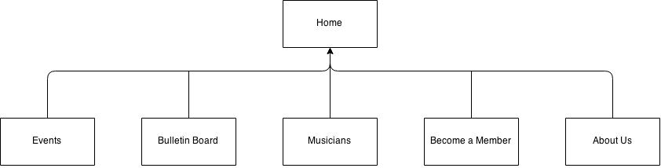

Members: Christian Thorpe, Bruce Maddison, James Epong, Kayla McKay, Matthew Bowman
Townsville music centre's website renovation aims to increase the number of members and the ticket sales to events. This in turn will increase the regional awareness and promotion of local musicians and the musical community in Townsville.
The number of new members for 3 months prior to the launch of the website will be recorded and this will be compared to the number of new members for 3 months after the site is launched. The success will be measured by the increase in the number of new members. The ticket sales will also be compared for 3 months prior to the launch and 3 months after.
The current customers of the company are people that are aged over 40 years with a wide range of musical tastes. The website is intended to be appealing to people over 40 years old of both genders, who share an interest in music and are interested in getting more involved in the events that the company hold. The webiste should use appropriate images related to music to draw the attention of the audience and make them want to read what the website has to offer. It should also use an appropriate colour scheme, which should be easy on the eyes but still draw attention to certain calls to action.
